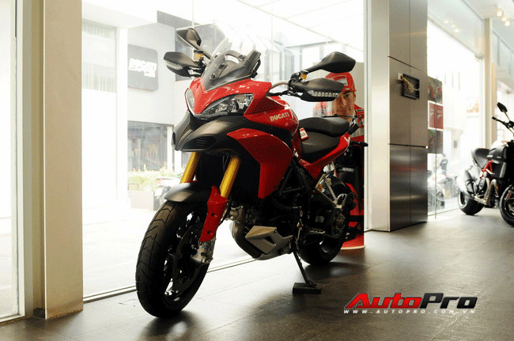
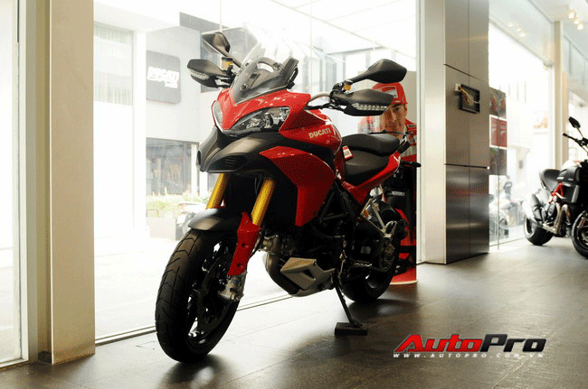

Cận cảnh "quái xế" Ducati Multistrada
Thanh Long - Theo PLTP
Cập nhật 06:00, Thứ ba ngày 7 tháng 12 năm 2012
AUTOPRO - Có mức giá bán dưới 20.000 USD tại thị trường nước ngoài, Ducati Multistrda được coi là đối thủ nặng ký với mẫu xe BMW GS
Đây là chiếc xe Ducati Multistrada phiên bản đầu tiên về đến Việt Nam trong thời gian gần đây. Được biết, chiếc mô tô mới về Việt Nam thuộc phiên bản Multistrada 1200 S được nhập khẩu từ Ý. Trong thời gian tới, những người mê xe Việt Nam sẽ sớm gặp lại chiếc xe này tại Đại hội mô tô 3 miền lần thứ 3 tại Đà Nẵng.Gần đây nhất được trình làng tại triển lãm ECIMA tại Milan vào năm 2009
Cung cấp sức mạnh cho Ducati Multistrada 1200S là khối động cơ Testastretta V-Twin, dung tích 1.198 cc được ứng dụng công nghệ điều khiển thời gian đóng mở van biến thiên và đánh lửa 2 bugi. Động cơ sản sinh công suất tối đa 160 mã lực tại 9.500 vòng/phút và mô-men xoắn cực đại 100,3 lb-ft tại 7.500 vòng/phút. Hai con số tương ứng của Ducati Multistrada cũ là 150 mã lực tại 9.250 vòng/phút và 91,8 lb-ft tại 7.500 vòng/phút.
Về các tính năng an toàn, Ducati Multistrada 1200S 2015 đảm bảo an toàn cho người ngồi trên xe với hệ thống điện tử mới, bao gồm điều chỉnh và kiểm soát độ bám bám đường, chống bó cứng phanh ABS cùng bướm ga điện tử 4 chế độ. Ducati Multistrada 1200S 2015 còn có hệ thống treo Ducati SkyHook kết hợp cùng hệ thống treo điều khiển điện tử bán chủ động này do hãng Sachs sản xuất và bao gồm phuộc lộn ngược 48 mm trước cùng giảm xóc đơn đằng sau.
Phiên bản được CafeAuto giới thiệu trong bài viết này là Multistrada 1200 S Touring được lắp ráp tại Thái Lan, sử dụng linh kiện, phụ tùng nhập từ Bologna, Ý và nhập khẩu chính hãng về Việt Nam với giá bán khởi điểm từ 633 triệu đồng, đã gồm thuế GTGT. Ngồi lên xe và ổn định tư thế lái, chiều cao yên xe lên đến 850 mm tạo cho người đi xe có chiều cao tốt.
 

Ảnh:Astrid
Nguồn:autopro